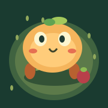

Mote Colony
A tiny woodland. Four curious creatures. A home they build together.
- Fully autonomous foraging, chopping, mining and carrying.
- Hunger, rest, day and night, regrowing resources and shelter improvements.
- Four independent brain states sharing the complete 139,255-neuron, 16,847,997-row FlyWire graph.
- Starts from a copied Darwin champion genome. Existing apps and saves stay separate.
- Automatic saves, creature inspection, pause and double-speed world time.
- Read-only USB diagnostics for direct troubleshooting.
Version 0.1.0-1 · rootless iOS 16 · about 75 MB download, 206 MB installed.
The game rules choose jobs and implement tools, navigation and survival. Connectome outputs modulate movement; Colony does not perform further training or demonstrate biological cognition. Runs while visible; no offline catch-up. Physical XR acceptance is pending.
Download package · Attribution · Dataset manifest
Back to the Sileo source